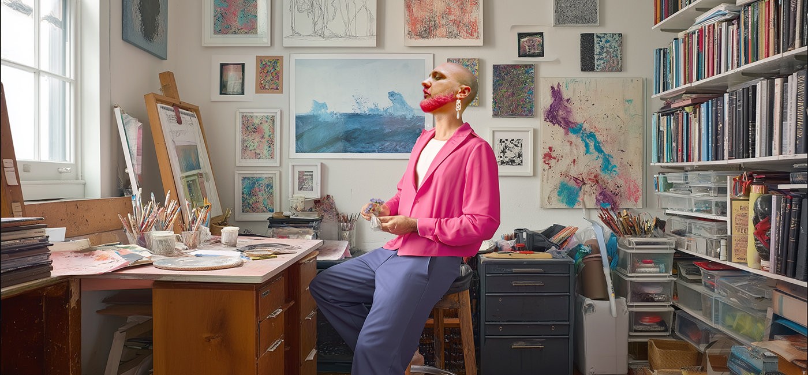
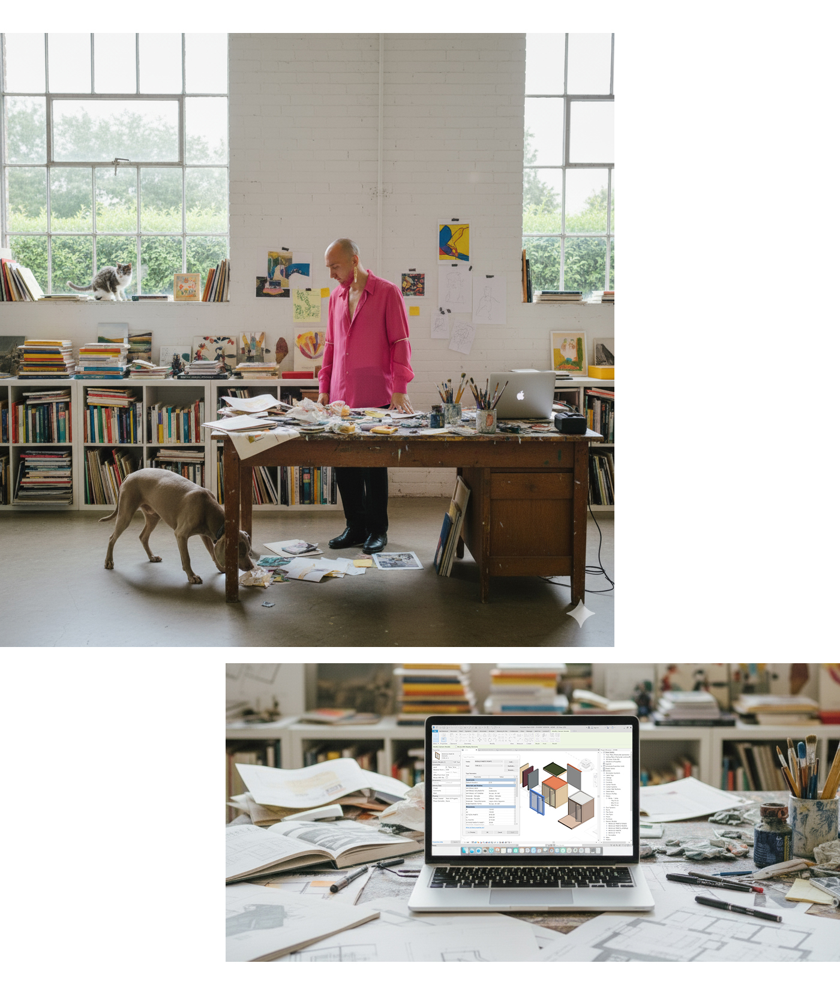
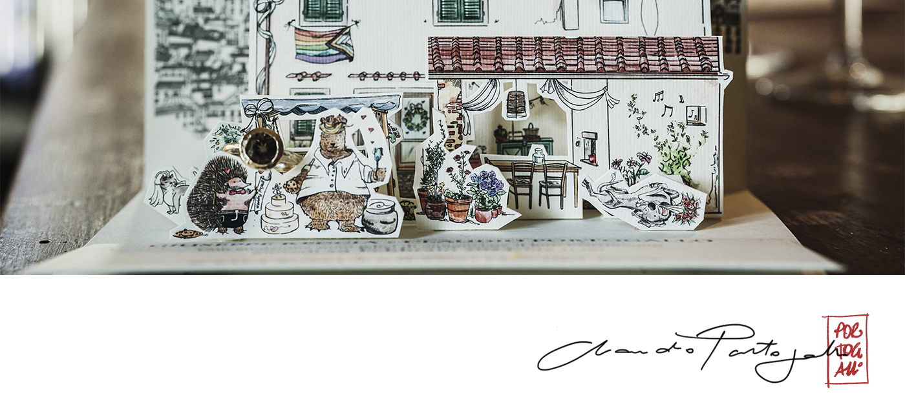

Portogallo Design
Architectural design & creative solutions Where form meets function
FIRENZE
EST. 2018
SCROLL
Lavori Selezionati
Una collezione curata di progetti di architettura e design
About me



Creiamo Insieme
Pronto a dare vita alla tua visione? Parliamo del tuo prossimo progetto ed esploriamo le possibilità.
Email
portogallo.claudio@gmail.com
Telefono
+39 334 321 6232
Studio
Firenze · Italia
Ricevo su appuntamento · Progetti in tutta Italia ed Europa